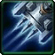

- Stats
- Abilities/Upgrades
- Strategy
- Lore
- Related

Armor: 0
Mineral Repair Cost:
 37.5
37.5Gas Repair Cost:
 18.75
18.75Repair Time:
 42
42 0/0 0 per second
0/0 0 per secondName: Lanzer Torpedoes
Damage: 10 (14 vs armored)
Attacks: 2
Cooldown: 2
Targets: Air only
Attack Range: 9
-
 Assault Mode -
Assault Mode -Name: Twin Gatling Cannon
Damage: 12
Attacks: 1
Cooldown: 1
Targets: Ground only
Attack Range: 6
Requirements: Levels 2-3 requires Armory
| Level |  Level 1 Level 1 |  Level 2 |  Level 3 Level 3 |
| Minerals | 100 | 175 | 250 |
| Vespene Gas | 100 | 175 | 250 |
| Time | 160 | 190 | 220 |
| Damage Bonus | +1 (+1) | +1 | +2 (+2) | +2 | +3 (+3) | +3 |
| Total Damage | 11 (15) (x2) | 13 | 12 (16) (x2) | 14 | 13 (17) (x2) | 15 |
2.25 in
Assault ModeAcceleration: 2.625 in Figher Mode |
1000 in
Assault ModeCollision Radius: 0.75
125Vespene Cost:
75Supply:
 2
2Produced From: Starport Build Time:
42Requirements: Starport
Requirements: Levels 2-3 requires Armory
| Level |  Level 1 Level 1 |  Level 2 Level 2 |  Level 3 Level 3 |
| Minerals | 150 | 225 | 300 |
| Vespene Gas | 150 | 225 | 300 |
| Time | 160 | 190 | 220 |
| Armor Bonus | +1 | +2 | +3 |
| Total Armor | 1 | 2 | 3 |
Medivac Size: 2
Unit Type: Armored, Mechanical, Ground/Air
| Icon | Minerals | Vespene Gas | Research Time | Researched At |
| 0 | 0 | 0 | Already Researched |
Duration:
3Information: Fighter Mode transforms the Viking to its air mode. The Fighter Mode viking flys and has an anti-air attack.
| Icon | Minerals | Vespene Gas | Research Time | Researched At |
| 0 | 0 | 0 | Already Researched |
Duration:
3Information: Assault Mode transforms the Viking to its ground mode. The Assault Mode walks and has a ground attack.
If you have any suggestions for more strategies, go ahead and post on the forums 'here'!
+1 Weapons vs Zerglings
When Zealots have a +1 weapon advantage versus Zerglings, they will kill Zerglings in two attacks instead of three. This makes Zealots very effecient against Zerglings until the zerg catches up in armor upgrades.
Because of this, there are a handful of timing attack that take advantage of the effecient +1 weapon zealots, forcing the zerg to make spines, roaches, or some other unit than zerglings unless the zerg wants to trade inefficiently.
+1 Weapons vs Zerglings
Sum text about how gosu this is
+1 Weapons vs Zerglings
Sum text about how gosu this is
- Overview
- History
Based heavily on the transformation design of the siege tank, the Viking was designed to be the ultimate anti-air and ground-support weapon system, armed with MT50 Lanzer Torpedoes and twin gatling guns for both respective tasks. A targeting system exists for both, along with displaying height and location.
The ability to self-destruct is also present. The arm and leg servos are interchangeable, easing repairs. Bellerephon further expanded the Viking's options through the Phobos-class weapon system—an improved loadout that adds a longer-range anti-air missile and an improved gatling cannon increased range in ground assaults. Enlightened Dynamics also developed Ripwave missiles for the hybrid.
In its aerial mode, Vikings are classified as air superiority fighters. The walker mode was considered more important. They can be paired with AH/G-24 Banshees for operations as air cavalry.
While the Viking's versatility is its greatest asset, it is also one of its drawbacks. Few pilots are able to handle both combat modes and the majority of Viking pilots are killed in their first battle (the term "cherry" is used for Viking pilots who have yet to carry out a transformation). Those who survive however, become amongst the most skilled pilots. The elite few who make it through training are so deadly that their names are well-known by both allies and enemies across the Koprulu Sector.
Viking pilots are equipped with helmets with visors that lower when they take their vehicles into the air. However, regardless of whatever advantages the visor might bring, it is still possible to fly a Viking without one.
{kind=link}
{kind=link}
The Brood War revealed weaknesses in terran anti-air capability. Wraith combat fighters and valkyrie missile frigates proved to be an unwieldy combination against agile zerg airborne organisms. In addition, ground-based anti-air support from goliath assault walkers was too limited in its mobility: all too often airborne attackers would simply move out of the goliath's range.
In the aftermath of the war, terran weapon technicians proposed a radical new concept to resolve both of these problems; an armored vehicle with the ability to change its combat role from an assault walker to an air-superiority fighter, enabling it to switch smoothly to fulfill tactical needs in a developing battle.
The Wyrm was an early design. It was quickly succeeded by the Viking, which had more armor, more options and a faster response time. A Viking was showcased at Ursa in 2502, where one single-handedly destroyed a military base. Final field testing of the Viking was carried out at Valhalla.
{kind=link}
Source Information
Text information from the Starcraft Wiki.
Photo 1 from StarCraft II: Wings of Liberty. Copyright: Blizzard Entertainment.
Photo 2 created by Blizzard Entertainment. Copyright: Blizzard Entertainment.
Photo 3 from StarCraft II: Wings of Liberty. Copyright: Blizzard Entertainment.
| Terran |
| Units |
| Command Center | SCV | Mule |
| Barracks | Marine | Marauder | Ghost | Reaper |
| Factory | Hellion | Siege Tank | Thor |
| Starport | Medivac | Viking | Banshee | Raven | Battlecruiser |
| Structures |
| Basic Buildings | Command Center | Orbital Command | Supply Depot | Refinery |
| Defensive Buildings | Planetary Fortress | Bunker | Missile Turret | Sensor Tower |
| Infantry Buildings | Barracks | Engineering Bay | Ghost Academy |
| Mechanical Buildings | Factory | Starport | Armory | Fusion Core |
| Add-ons/Spawned | Auto-Turret | Point Defense Drone | Tech Lab | Reactor |